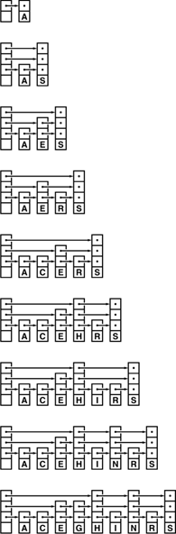

C++ Programming Robert Sedgewick - Princeton University Addison Wesley Professional Algorithms in C++, Parts 1–4: Fundamentals, Data Structure, Sorting, Searching, Third Edition C++ Programming Robert Sedgewick - Princeton University Addison Wesley Professional Algorithms in C++, Parts 1–4: Fundamentals, Data Structure, Sorting, Searching, Third Edition
13.5. Skip Lists
In this section, we consider an approach to developing fast implementations of symbol-table operations that seems at first to be completely different from the tree-based methods that we have been considering, but actually is closely related to them. It is based on a randomized data structure and is almost certain to provide near-optimal performance for all the basic operations for the symbol-table ADT that we have been considering. The underlying data structure, which was developed by Pugh in 1990 (see reference section), is called a skip list. It uses extra links in the nodes of a linked list to skip through large portions of a list at a time during a search.
Figure 13.22 gives a simple example, where every third node in an ordered linked list contains an extra link that allows us to skip three nodes in the list. We can use the extra links to speed up search: We scan through the top list until we find the key or a node with a smaller key with a link to a node with a larger key, then use the links at the bottom to check the two intervening nodes. This method speeds up search by a factor of 3, because we examine only about k/3 nodes in a successful search for the kth node on the list.
Every third node in this list has a second link, so we can skip through the list at nearly three times the speed that we could go by following the first links. For example, we can get to the twelfth node in the list, the P, from the beginning by following just five links: second links to C, G, L, N, and then through N's first link, P.
We can iterate this construction, and provide a second extra link to be able to scan faster through the nodes with extra links, and so forth. Also, we can generalize the construction by skipping a variable number of nodes with each link.
Definition 13.5. A skip list is an ordered linked list where each node contains a variable number of links, with the ith links in the nodes implementing singly linked lists that skip the nodes with fewer than i links|
Figure 13.23 depicts a sample skip list, and shows an example of searching and inserting a new node. To search, we scan through the top list until we find the search key or a node with a smaller key that has a link to a node with a larger key; then, we move to the second-from-top list and iterate the procedure, continuing until the search key is found or a search miss happens on the bottom level. To insert, we search, linking in the new node when moving from level k to level k-1 if the new node has at least k extra links.
By adding more levels to the structure in Figure 13.22 and allowing links to skip variable numbers of nodes, we get an example of a general skip list. To search for a key in the list, we start at the highest level, moving down each time that we encounter a key that is not smaller than the search key. Here (top), we find L by starting at level 3, moving across the first link, then down at G (treating the null link as a link to a sentinel), then across to I, then down to level 2 because S is greater than L, then down to level 1 because M is greater than L. To insert a node L with three links, we link it into the three lists at precisely the places where we found links to greater keys during the search.
|
The internal representation of the nodes is straightforward. We replace the single link in a singly linked list by an array of links, and an integer that contains the number of links in the node. Memory management is perhaps the most complicated aspect of skip lists—we will examine the type declarations and the code for allocating new nodes shortly, when we consider insertion. For the moment, it suffices to note that we can access the node that follows node t on the (k + 1)st level in the skip list by accessing t->next[k]. The recursive implementation in Program 13.7 shows that searching in skip lists not only is a straightforward generalization of searching in singly linked lists, but also is similar to binary search or searching in BSTs. We test whether the current node has the search key. Then, if it does not, we compare the key in the current node with the search key. We do one recursive call if it is larger and a different recursive call if it is smaller.
Program 13.7. Searching in skip lists|
For k equal to 0, this code is equivalent to Program 12.6, for searching in singly linked lists. For general k, we move to the next node in the list on level k if its key is smaller than the search key, and down to level k-1 if its key is not smaller.
private:
Item searchR(link t, Key v, int k)
{ if (t == 0) return nullItem;
if (v == t->item.key()) return t->item;
link x = t->next[k];
if ((x == 0) || (v < x->item.key()))
{
if (k == 0) return nullItem;
return searchR(t, v, k-1);
}
return searchR(x, v, k);
}
public:
Item search(Key v)
{ return searchR(head, v, lgN); }
|
The first task that we face when we want to insert a new node into a skip list is to determine how many links we want that node to have. All the nodes have at least one link; following the intuition depicted in Figure 13.22, we can skip t nodes at a time on the second level if one out of every t nodes has at least two links; iterating, we come to the conclusion that we want one out of every tj nodes to have at least j + 1 links.
Program 13.8. Skip-list data structures and constructor|
Nodes in skip lists have an array of links, so the constructor for node needs to allocate the array and to set all the links to 0. The constant lgNmax is the maximum number of levels that we will allow in the list: It might be set to five for tiny lists, or to 30 for huge lists. The variable N keeps the number of items in the list, as usual, and lgN is the number of levels. An empty list is a head node with lgNmax links, all set to 0, with N and lgN also set to 0.
private:
struct node
{ Item item[;;] node **next; int sz;
node(Item x, int k)
{ item = x; sz = k; next = new node*[k];
for (int i = 0; i < k; i++) next[i] = 0; }
};
typedef node *link;
link head;
Item nullItem;
int lgN;
public:
ST(int)
{ head = new node(nullItem, lgNmax); lgN = 0; }
|
To make nodes with this property, we randomize, using a function that returns j + 1 with probability 1/tj. Given j,we createa new node with j links and insert it into the skip list using the same recursive schema as we did for search, as illustrated in Figure 13.23. After we have reached level j, we link in the new node each time that we move down to the next level. At that point, we have established that the item in the current node is less than the search key and links (on level j) to a node that is not less than the search key.
To initialize a skip list, we build a head node with the maximum number of levels that we will allow in the list, with null pointers at all levels. Programs 13.8 and Program 13.9 implement initialization and insertion for skip lists.
Program 13.9. Insertion in skip lists|
We generate a new j-link node with probability 1/2j, then follow the search path precisely as in Program 13.7, but link in the new node when we move down to each of the bottom j levels.
private:
int randX()
{ int i, j, t = rand();
for (i = 1, j = 2; i < lgNmax; i++, j += j)
if (t > RAND_MAX/j) break;
if (i > lgN) lgN = i;
return i[;;]
}
void insertR(link t, link x, int k)
{ Key v = x->item.key(); link tk = t->next[k];
if ((tk == 0) || (v < tk->item.key()))
{
if (k < x->sz)
{ x->next[k] = tk; t->next[k] = x; }
if (k == 0) return;
insertR(t, x, k-1); return;
}
insertR(tk, x, k);
}
public:
void insert(Item v)
{ insertR(head, new node(v, randX()), lgN); }
|
Figure 13.24 shows the construction of a skip list for a sample set of keys when inserted in random order; Figure 13.25 shows a larger example; and Figure 13.26 shows the construction of a skip list for the same set of keys as in Figure 13.24, but inserted in increasing order. Like those of randomized BSTs, the stochastic properties of skip lists do not depend on the order in which keys are inserted.
This sequence depicts the result of inserting items with keys A S E R C H I N G into an initially empty skip list. Nodes have j links with probability 1/2j.

This skip list is the result of inserting 50 randomly ordered keys into an initially empty list. We can access any node by following 7 or fewer links.
This sequence depicts the result of inserting items with keys A C E G H I N R S into an initially empty skip list. Stochastic properties of the list do not depend on the key insertion order.
Property 13.10. Search and insertion in a randomized skip list with parameter t require about (t logt N)/2 = (t/(2lgt))lgN comparisons, on the average|
We expect the skip list to have about logtN levels, because logtN is greater than the smallest j for which tj = N. On each level, we expect that about t nodes were skipped on the previous level, and that we should have to go through about half of them, on the average, before dropping to the next level. The number of levels is small, as is clear from the example in Figure 13.25, but the precise analysis that establishes this is not elementary (see reference section).
|
Property 13.11. Skip lists have (t/(t - 1))N links on the average|
There are N links on the bottom, N/t links on the first level, about N/t2 links on the second level, and so forth, for a total of about
N(1 + 1/t + 1/t2 + 1/t3 ...) = N/(1-1/t)
links in the whole list.
|
Picking an appropriate value of t leads us immediately to a time–space tradeoff. When t = 2, skip lists need about lgN comparisons and 2N links, on the average—performance comparable with the best that we have seen with BSTs. For larger t, the time for search and insert is longer, but the extra space for links is smaller. Differentiating the expression in Property 13.10, we find that the choice t = e minimizes the expected number of comparisons for searching in a skip list. The following table gives the value of the coefficient of NlgN in the number of comparisons needed to construct a table of N items:
t | 2 | e | 3 | 4 | 8 | 16 | lgt | 1:00 | 1:44 | 1:58 | 2:00 | 3:00 | 4:00 | t/lgt | 2:00 | 1:88 | 1:89 | 2:00 | 2:67 | 4:00 |
If doing comparisons, following links, and moving down recursively have costs that differ substantially, we can do a more refined calculation along these lines (see Exercise 13.83).
Because the search time is logarithmic, we can reduce the space overhead to not much more than that for singly-linked lists (if space is tight) by increasing t. Precise estimates of running time depend on assessment of the relative costs of following links across the lists and the recursive calls to move down to the next level. We shall revisit this kind of time–space tradeoff again in Chapter 16, when we look at the problem of indexing huge files.
Program 13.10. Removal in skip lists|
To remove a node with a given key from a skip list, we unlink it at each level that we find a link to it, then delete it when we reach the bottom level.
private:
void removeR(link t, Key v, int k)
{ link x = t->next[k];
if (!(x->item.key() < v))
{
if (v == x->item.key())
{ t->next[k] = x->next[k]; }
if (k == 0) { delete x; return; }
removeR(t, v, k-1); return;
}
removeR(t->next[k], v, k);
}
public:
void remove(Item x)
{ removeR(head, x.key(), lgN); }
|
Other symbol-table functions are straightforward to implement with skip lists. For example, Program 13.10 gives an implementation of the remove function, using the same recursive scheme that we used for insert in Program 13.9. To delete, we unlink the node from the lists at each level (where we linked it in for insert), and we free the node after unlinking it from the bottom list (as opposed to creating it before traversing the list for insert). To implement join, we merge the lists (see Exercise 13.78); to implement select, we add a field to each node that gives the number of nodes skipped by the highest-level link to it (see Exercise 13.77).
Although skip lists are easy to conceptualize as a systematic way to move quickly through a linked list, it is also important to understand that the underlying data structure is nothing more than an alternative representation of a balanced tree. For example, Figure 13.27 shows the skip-list representation of the balanced 2-3-4 tree in Figure 13.10. We can implement the balanced 2-3-4 tree algorithms of Section 13.3 using the skip-list abstraction, rather than the red–black tree abstraction of Section 13.4. The resulting code is somewhat more complicated than the implementations that we have considered (see Exercise 13.80). We shall revisit this relationship between skip lists and balanced trees in Chapter 16.
This skip list is a representation of the 2-3-4 tree in Figure 13.10. In general, skip lists correspond to balanced multiway trees with one or more links per node (1-nodes, with no keys and 1 link, are allowed). To build the skip list corresponding to a tree, we give each node a number of links equal to its height in the tree, and then link the nodes horizontally. To build the tree corresponding to a skip list, we group skipped nodes, and recursively link them to nodes at the next level.

The ideal skip list illustrated in Figure 13.22 is a rigid structure that is as difficult to maintain, when we insert a new node, as is the ordered array for binary search, because the insertion involves changing all the links in all the nodes after the node inserted. One way to loosen the structure is to build lists where each link skips either one, two, or three links on the level below: this arrangement corresponds to 2-3-4 trees, as illustrated in Figure 13.27. The randomized algorithm discussed in this section is another effective way to loosen the structure; we shall consider other alternatives in Chapter 16.
|